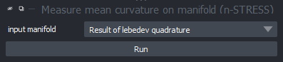
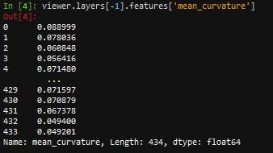

Measure curvature
Contents
5.2. Measure curvature#
This tutorial explains how to measure curvature from a sperhical harmonics expansion. To do so, first create a spherical harmonics expansion as shownw in this section. To get the curvature from this you’ll then have to perform a lebedev quadrature and then measure curvature.
5.2.1. Lebedev quadrature#
A lebedev quadrature determines points on the surface of a sperhical harmonics expansion that allow to calculate downstream parameters with high accuracy. To do so, chose the appropriate command from the napari tools menu (Tools > Points > Perform lebedev quadrature (n-STRESS) and select the layer with the expansion data from the drowdown:

5.2.2. Measure curvature#
Next, you can already measure the mean curvature on this surface with Tools > Measurement > Measure mean curvature on manifold (n-STRESS)". Make sure to select the previously generated layer that contains the Lebedev quadrature points in the dropdown:

The results are then stored in the layer.features. To retrieve the actual curvature values, navigate to the console of the viewer (button in the lower left corner) and type viewer.layers[-1].features to display all features that are associated with the data:

Type viewer.layers[-1].features['Mean_curvature_at_lebedev_points'] to retrieve specifically the curvature values.